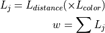

Tracking object in real time
This tutorial explains 6D object tracking and show example code(tracking_sample.cpp) using pcl::tracking libraries. Implementing this example code, you can see the segment track the target object even if you move tracked object or your sensor device. In example, first, you should initialize tracker and you have to pass target object’s point cloud to tracker so that tracker should know what to track. So, before this tutorial, you need to make segmented model with PCD file beforehand. Setting the model to tracker, it starts tracking the object.
Following figure shows how looks like when tracking works successfully.

fig1: The blue model tracks the cup successfully with red particles.
Details
The pcl_tracking library contains data structures and mechanism for 3D tracking which uses Particle Filter Algorithm. This tracking will enable you to implement 6D-pose (position and rotation) tracking which is optimized to run in real time.
- At each loop, tracking program proceeds along with following algorithm.(see fig2)
(At t = t - 1) At first, using previous Pariticle’s information about position and rotation, it will predict each position and rotation of them at the next frame.
Next, we calculate weights of those particles with the likelihood formula below.(you can select which likelihood function you use)
Finally, we use the evaluate function which compares real point cloud data from depth sensor with the predicted particles, and resample particles.


fig2: The process of tracking Particle Filter
The code
Create three files, paste following code with your editor and save it as tracking_sample.cpp.
tracking_sample.cpp
1#include <pcl/point_cloud.h>
2#include <pcl/point_types.h>
3#include <pcl/io/openni_grabber.h>
4#include <pcl/common/centroid.h>
5#include <pcl/common/transforms.h> // for transformPointCloud
6
7#include <pcl/visualization/cloud_viewer.h>
8#include <pcl/visualization/pcl_visualizer.h>
9#include <pcl/io/pcd_io.h>
10
11#include <pcl/filters/passthrough.h>
12#include <pcl/filters/approximate_voxel_grid.h>
13
14#include <pcl/tracking/tracking.h>
15#include <pcl/tracking/particle_filter.h>
16#include <pcl/tracking/kld_adaptive_particle_filter_omp.h>
17#include <pcl/tracking/particle_filter_omp.h>
18#include <pcl/tracking/coherence.h>
19#include <pcl/tracking/distance_coherence.h>
20#include <pcl/tracking/approx_nearest_pair_point_cloud_coherence.h>
21#include <pcl/tracking/nearest_pair_point_cloud_coherence.h>
22
23#include <boost/format.hpp>
24
25#include <mutex>
26#include <thread>
27
28using namespace pcl::tracking;
29using namespace std::chrono_literals;
30
31typedef pcl::PointXYZRGBA RefPointType;
32typedef ParticleXYZRPY ParticleT;
33typedef pcl::PointCloud<pcl::PointXYZRGBA> Cloud;
34typedef Cloud::Ptr CloudPtr;
35typedef Cloud::ConstPtr CloudConstPtr;
36typedef ParticleFilterTracker<RefPointType, ParticleT> ParticleFilter;
37
38CloudPtr cloud_pass_;
39CloudPtr cloud_pass_downsampled_;
40CloudPtr target_cloud;
41
42std::mutex mtx_;
43ParticleFilter::Ptr tracker_;
44bool new_cloud_;
45double downsampling_grid_size_;
46int counter;
47
48
49//Filter along a specified dimension
50void filterPassThrough (const CloudConstPtr &cloud, Cloud &result)
51{
52 pcl::PassThrough<pcl::PointXYZRGBA> pass;
53 pass.setFilterFieldName ("z");
54 pass.setFilterLimits (0.0, 10.0);
55 pass.setKeepOrganized (false);
56 pass.setInputCloud (cloud);
57 pass.filter (result);
58}
59
60
61void gridSampleApprox (const CloudConstPtr &cloud, Cloud &result, double leaf_size)
62{
63 pcl::ApproximateVoxelGrid<pcl::PointXYZRGBA> grid;
64 grid.setLeafSize (static_cast<float> (leaf_size), static_cast<float> (leaf_size), static_cast<float> (leaf_size));
65 grid.setInputCloud (cloud);
66 grid.filter (result);
67}
68
69
70//Draw the current particles
71bool
72drawParticles (pcl::visualization::PCLVisualizer& viz)
73{
74 ParticleFilter::PointCloudStatePtr particles = tracker_->getParticles ();
75 if (particles && new_cloud_)
76 {
77 //Set pointCloud with particle's points
78 pcl::PointCloud<pcl::PointXYZ>::Ptr particle_cloud (new pcl::PointCloud<pcl::PointXYZ> ());
79 for (const auto& particle: *particles)
80 {
81 pcl::PointXYZ point;
82
83 point.x = particle.x;
84 point.y = particle.y;
85 point.z = particle.z;
86 particle_cloud->push_back (point);
87 }
88
89 //Draw red particles
90 {
91 pcl::visualization::PointCloudColorHandlerCustom<pcl::PointXYZ> red_color (particle_cloud, 250, 99, 71);
92
93 if (!viz.updatePointCloud (particle_cloud, red_color, "particle cloud"))
94 viz.addPointCloud (particle_cloud, red_color, "particle cloud");
95 }
96 return true;
97 }
98 else
99 {
100 return false;
101 }
102}
103
104//Draw model reference point cloud
105void
106drawResult (pcl::visualization::PCLVisualizer& viz)
107{
108 ParticleXYZRPY result = tracker_->getResult ();
109 Eigen::Affine3f transformation = tracker_->toEigenMatrix (result);
110
111 //move close to camera a little for better visualization
112 transformation.translation () += Eigen::Vector3f (0.0f, 0.0f, -0.005f);
113 CloudPtr result_cloud (new Cloud ());
114 pcl::transformPointCloud<RefPointType> (*(tracker_->getReferenceCloud ()), *result_cloud, transformation);
115
116 //Draw blue model reference point cloud
117 {
118 pcl::visualization::PointCloudColorHandlerCustom<RefPointType> blue_color (result_cloud, 0, 0, 255);
119
120 if (!viz.updatePointCloud (result_cloud, blue_color, "resultcloud"))
121 viz.addPointCloud (result_cloud, blue_color, "resultcloud");
122 }
123}
124
125//visualization's callback function
126void
127viz_cb (pcl::visualization::PCLVisualizer& viz)
128{
129 std::lock_guard<std::mutex> lock (mtx_);
130
131 if (!cloud_pass_)
132 {
133 std::this_thread::sleep_for(1s);
134 return;
135 }
136
137 //Draw downsampled point cloud from sensor
138 if (new_cloud_ && cloud_pass_downsampled_)
139 {
140 CloudPtr cloud_pass;
141 cloud_pass = cloud_pass_downsampled_;
142
143 if (!viz.updatePointCloud (cloud_pass, "cloudpass"))
144 {
145 viz.addPointCloud (cloud_pass, "cloudpass");
146 viz.resetCameraViewpoint ("cloudpass");
147 }
148 bool ret = drawParticles (viz);
149 if (ret)
150 drawResult (viz);
151 }
152 new_cloud_ = false;
153}
154
155//OpenNI Grabber's cloud Callback function
156void
157cloud_cb (const CloudConstPtr &cloud)
158{
159 std::lock_guard<std::mutex> lock (mtx_);
160 cloud_pass_.reset (new Cloud);
161 cloud_pass_downsampled_.reset (new Cloud);
162 filterPassThrough (cloud, *cloud_pass_);
163 gridSampleApprox (cloud_pass_, *cloud_pass_downsampled_, downsampling_grid_size_);
164
165 if(counter < 10){
166 counter++;
167 }else{
168 //Track the object
169 tracker_->setInputCloud (cloud_pass_downsampled_);
170 tracker_->compute ();
171 new_cloud_ = true;
172 }
173}
174
175int
176main (int argc, char** argv)
177{
178 if (argc < 3)
179 {
180 PCL_WARN("Please set device_id pcd_filename(e.g. $ %s '#1' sample.pcd)\n", argv[0]);
181 exit (1);
182 }
183
184 //read pcd file
185 target_cloud.reset(new Cloud());
186 if(pcl::io::loadPCDFile (argv[2], *target_cloud) == -1){
187 std::cout << "pcd file not found" << std::endl;
188 exit(-1);
189 }
190
191 std::string device_id = std::string (argv[1]);
192
193 counter = 0;
194
195 //Set parameters
196 new_cloud_ = false;
197 downsampling_grid_size_ = 0.002;
198
199 std::vector<double> default_step_covariance = std::vector<double> (6, 0.015 * 0.015);
200 default_step_covariance[3] *= 40.0;
201 default_step_covariance[4] *= 40.0;
202 default_step_covariance[5] *= 40.0;
203
204 std::vector<double> initial_noise_covariance = std::vector<double> (6, 0.00001);
205 std::vector<double> default_initial_mean = std::vector<double> (6, 0.0);
206
207 KLDAdaptiveParticleFilterOMPTracker<RefPointType, ParticleT>::Ptr tracker
208 (new KLDAdaptiveParticleFilterOMPTracker<RefPointType, ParticleT> (8));
209
210 ParticleT bin_size;
211 bin_size.x = 0.1f;
212 bin_size.y = 0.1f;
213 bin_size.z = 0.1f;
214 bin_size.roll = 0.1f;
215 bin_size.pitch = 0.1f;
216 bin_size.yaw = 0.1f;
217
218
219 //Set all parameters for KLDAdaptiveParticleFilterOMPTracker
220 tracker->setMaximumParticleNum (1000);
221 tracker->setDelta (0.99);
222 tracker->setEpsilon (0.2);
223 tracker->setBinSize (bin_size);
224
225 //Set all parameters for ParticleFilter
226 tracker_ = tracker;
227 tracker_->setTrans (Eigen::Affine3f::Identity ());
228 tracker_->setStepNoiseCovariance (default_step_covariance);
229 tracker_->setInitialNoiseCovariance (initial_noise_covariance);
230 tracker_->setInitialNoiseMean (default_initial_mean);
231 tracker_->setIterationNum (1);
232 tracker_->setParticleNum (600);
233 tracker_->setResampleLikelihoodThr(0.00);
234 tracker_->setUseNormal (false);
235
236
237 //Setup coherence object for tracking
238 ApproxNearestPairPointCloudCoherence<RefPointType>::Ptr coherence
239 (new ApproxNearestPairPointCloudCoherence<RefPointType>);
240
241 DistanceCoherence<RefPointType>::Ptr distance_coherence
242 (new DistanceCoherence<RefPointType>);
243 coherence->addPointCoherence (distance_coherence);
244
245 pcl::search::Octree<RefPointType>::Ptr search (new pcl::search::Octree<RefPointType> (0.01));
246 coherence->setSearchMethod (search);
247 coherence->setMaximumDistance (0.01);
248
249 tracker_->setCloudCoherence (coherence);
250
251 //prepare the model of tracker's target
252 Eigen::Vector4f c;
253 Eigen::Affine3f trans = Eigen::Affine3f::Identity ();
254 CloudPtr transed_ref (new Cloud);
255 CloudPtr transed_ref_downsampled (new Cloud);
256
257 pcl::compute3DCentroid<RefPointType> (*target_cloud, c);
258 trans.translation ().matrix () = Eigen::Vector3f (c[0], c[1], c[2]);
259 pcl::transformPointCloud<RefPointType> (*target_cloud, *transed_ref, trans.inverse());
260 gridSampleApprox (transed_ref, *transed_ref_downsampled, downsampling_grid_size_);
261
262 //set reference model and trans
263 tracker_->setReferenceCloud (transed_ref_downsampled);
264 tracker_->setTrans (trans);
265
266 //Setup OpenNIGrabber and viewer
267 pcl::visualization::CloudViewer* viewer_ = new pcl::visualization::CloudViewer("PCL OpenNI Tracking Viewer");
268 pcl::Grabber* interface = new pcl::OpenNIGrabber (device_id);
269 std::function<void (const CloudConstPtr&)> f = cloud_cb;
270 interface->registerCallback (f);
271
272 viewer_->runOnVisualizationThread (viz_cb, "viz_cb");
273
274 //Start viewer and object tracking
275 interface->start();
276 while (!viewer_->wasStopped ())
277 std::this_thread::sleep_for(1s);
278 interface->stop();
279}
The explanation
Now, let’s break down the code piece by piece.
//Set all parameters for KLDAdaptiveParticleFilterOMPTracker
tracker->setMaximumParticleNum (1000);
tracker->setDelta (0.99);
tracker->setEpsilon (0.2);
tracker->setBinSize (bin_size);
//Set all parameters for ParticleFilter
tracker_ = tracker;
tracker_->setTrans (Eigen::Affine3f::Identity ());
tracker_->setStepNoiseCovariance (default_step_covariance);
tracker_->setInitialNoiseCovariance (initial_noise_covariance);
tracker_->setInitialNoiseMean (default_initial_mean);
tracker_->setIterationNum (1);
tracker_->setParticleNum (600);
tracker_->setResampleLikelihoodThr(0.00);
tracker_->setUseNormal (false);
First, in main function, these lines set the parameters for tracking.
//Setup coherence object for tracking
ApproxNearestPairPointCloudCoherence<RefPointType>::Ptr coherence
(new ApproxNearestPairPointCloudCoherence<RefPointType>);
DistanceCoherence<RefPointType>::Ptr distance_coherence
(new DistanceCoherence<RefPointType>);
coherence->addPointCoherence (distance_coherence);
pcl::search::Octree<RefPointType>::Ptr search (new pcl::search::Octree<RefPointType> (0.01));
coherence->setSearchMethod (search);
coherence->setMaximumDistance (0.01);
tracker_->setCloudCoherence (coherence);
Here, we set likelihood function which tracker use when calculate weights. You can add more likelihood function as you like. By default, there are normals likelihood and color likelihood functions. When you want to add other likelihood function, all you have to do is initialize new Coherence Class and add the Coherence instance to coherence variable with addPointCoherence function.
//prepare the model of tracker's target
Eigen::Vector4f c;
Eigen::Affine3f trans = Eigen::Affine3f::Identity ();
CloudPtr transed_ref (new Cloud);
CloudPtr transed_ref_downsampled (new Cloud);
pcl::compute3DCentroid<RefPointType> (*target_cloud, c);
trans.translation ().matrix () = Eigen::Vector3f (c[0], c[1], c[2]);
pcl::transformPointCloud<RefPointType> (*target_cloud, *transed_ref, trans.inverse());
gridSampleApprox (transed_ref, *transed_ref_downsampled, downsampling_grid_size_);
//set reference model and trans
tracker_->setReferenceCloud (transed_ref_downsampled);
tracker_->setTrans (trans);
In this part, we set the point cloud loaded from pcd file as reference model to tracker and also set model’s transform values.
if(counter < 10){
counter++;
}else{
//Track the object
tracker_->setInputCloud (cloud_pass_downsampled_);
tracker_->compute ();
new_cloud_ = true;
}
Until the counter variable become equal to 10, we ignore the input point cloud, because the point cloud at first few frames often have noise. After counter variable reach to 10 frame, at each loop, we set downsampled input point cloud to tracker and the tracker will compute particles movement.
ParticleFilter::PointCloudStatePtr particles = tracker_->getParticles ();
In drawParticles function, you can get particles’s positions by calling getParticles().
ParticleXYZRPY result = tracker_->getResult ();
Eigen::Affine3f transformation = tracker_->toEigenMatrix (result);
In drawResult function, you can get model information about position and rotation.
Compiling and running the program
Create a CMakeLists.txt file and add the following lines into it.
1cmake_minimum_required(VERSION 3.5 FATAL_ERROR)
2
3project(openni_tracking)
4
5find_package(PCL 1.7 REQUIRED)
6
7include_directories(${PCL_INCLUDE_DIRS})
8link_directories(${PCL_LIBRARY_DIRS})
9add_definitions(${PCL_DEFINITIONS})
10
11add_executable (tracking_sample tracking_sample.cpp)
12target_link_libraries (tracking_sample ${PCL_LIBRARIES})
If you finish saving CMakeLists.txt, let’s prepare for running.
Put the target object on a plane where there is nothing.
Put sensor device about 1 meter away from target.
Don’t move the target and the device until you launch tracking program.
Output only target point cloud with your other code (See Plane model segmentation tutorial) and save as tracking_target.pcd
After you created model point cloud and the executable, you can then launch tracking_sample. Set device_id as second argument and pcd file’s name you made in above 4 as third.
$ ./tracking_sample “#1” tracking_target.pcd
After few seconds, tracking will start working and you can move tracking object around. As you can see in following pictures, the blue point cloud is reference model segmentation’s cloud and the red one is particles’ cloud.


More Advanced
If you want to see more flexible and useful tracking code which starts tracking without preparing to make segmented model beforehand, you should refer a tracking code https://github.com/PointCloudLibrary/pcl/blob/master/apps/src/openni_tracking.cpp. It will show you better and more legible code. The above Figures are windows when you implement that code.